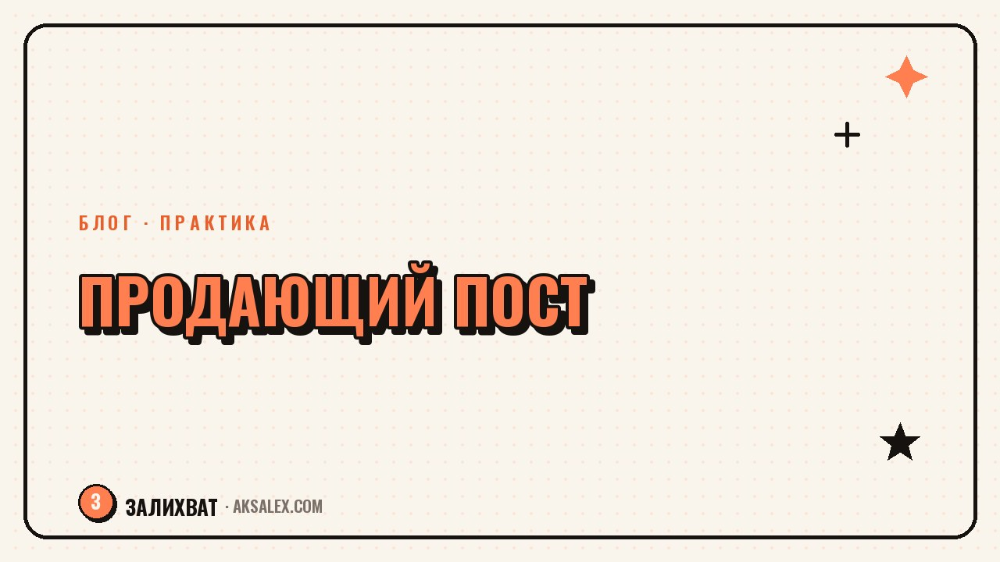

Как написать продающий пост с помощью нейросети

Рекламный пост читают по-другому, чем обычный. Человек либо цепляется за первую строчку, либо пролистывает дальше за секунду. Нейросеть не напишет за тебя продающий текст с нуля так, чтобы он звучал как твой голос, но может собрать крепкий черновик по правильной структуре, если задать ей верные вопросы.
Почему обычный рассказ о продукте не продаёт
Пост вида «у нас новый курс, записывайтесь» читатель видит как рекламу и пролистывает - мозг давно научился отфильтровывать такие сигналы. Продающий пост работает иначе: он сначала говорит о проблеме читателя, а предложение появляется только тогда, когда человек уже узнал в тексте себя.
Это касается любого формата - курса, услуги мастера, товара на маркетплейсе. Разница между постом, который читают до конца, и постом, который закрывают сразу, обычно в первых строчках и в том, о ком текст: о продукте или о читателе.
Структура, на которую стоит опираться
Пять блоков продающего поста
- Хук - первая строчка, которая останавливает скролл
- Боль - конкретная ситуация, в которой читатель узнаёт себя
- Поворот - почему привычный способ решения не работает
- Решение - твой продукт или услуга как логичный следующий шаг
- Доказательство и предложение - что подтверждает твои слова и что делать дальше
Не обязательно использовать все пять блоков в каждом посте - иногда хватает хука, боли и решения. Но держать эту структуру в голове помогает не скатиться в сухое описание характеристик.
Как просить нейросеть сделать черновик
Самая частая ошибка - просить нейросеть «написать продающий пост про услугу». В ответ выходит текст с общими фразами про «уникальный подход», который сложно отличить от сотен таких же. Чем подробнее вводные, тем живее черновик.
Нейросеть пишет настолько конкретно, насколько конкретно ты описал ситуацию клиента - общий запрос даёт общий текст.
Опиши нейросети реальную историю: кто твой клиент, с какой проблемой приходит, что уже пробовал и почему не сработало, что получает после работы с тобой. Попроси несколько вариантов хука отдельно от текста - так проще выбрать живой вариант.
- Опиши конкретного клиента, а не абстрактную аудиторию
- Назови проблему словами, которыми говорит сам клиент
- Попроси 3-5 вариантов хука, а не один готовый пост
- Дай пример своего реального тона, чтобы черновик звучал похоже
Разбор: слабый хук и доработанный вариант
Разница между постом, который пролистывают, и постом, который читают, часто видна уже в первой строке. Вот как можно превратить общий заход в конкретный, используя черновик нейросети как основу.
| Слабый вариант | Что не так | Доработанный вариант |
|---|---|---|
| У нас лучшие услуги маникюра в городе | Общая похвала без читателя внутри | Три часа на работу, а лак облез через два дня? Разберём, почему так бывает |
| Запишитесь на консультацию по финансам | Нет конкретной боли | Зарплата приходит, а к концу месяца снова пустой кошелёк - давай разберём, куда уходят деньги |
| Новый курс по английскому уже доступен | Продукт в центре, не человек | Учишь язык три года, а на созвоне с партнёром опять молчишь - знакомо? |
Частые ошибки после черновика от нейросети
Готовый текст от нейросети редко можно публиковать без правок - он пишется без твоего живого опыта и голоса. Вот что обычно приходится убирать.
- Канцелярские обороты вроде «данный продукт» или «в современных реалиях»
- Обещания без подтверждения - убери то, что не можешь подтвердить фактом
- Одинаковые конструкции предложений подряд - перечитай вслух
- Избыточные превосходные степени: «лучший», «уникальный», «революционный»
Хорошая проверка - прочитать черновик вслух. Если фраза режет слух или звучит не как ты говоришь с подругой, её стоит переписать своими словами, даже если по смыслу всё верно.
Форматы: лента, сторис и подпись к видео
Структура остаётся той же, но объём и темп подачи различаются по форматам. В ленте есть время развернуть историю, в сторис решения принимаются за секунды, а подпись к видео работает вместе с роликом, а не отдельно.
Попроси нейросеть адаптировать один черновик под разные форматы - это быстрее, чем писать каждый заново: структура боли и решения сохраняется, меняется только подача и длина.
Частые вопросы
Можно ли публиковать текст от нейросети без правок?
Лучше не стоит - такой текст легко отличить по общим фразам. Прочитай черновик вслух и замени канцелярские обороты и шаблонные обещания на свои слова.
Сколько раз просить нейросеть переписать пост?
Обычно достаточно двух-трёх заходов: сначала варианты хука, потом доработка структуры под твой тон. Если результат всё ещё общий, дело в слишком общем описании задачи, а не в количестве попыток.
Как написать хук, если продукт самый обычный?
Ищи не уникальность продукта, а конкретную ситуацию клиента: что он чувствует перед покупкой и что меняется после. Обычная услуга становится интересной, если показана через реальную боль.
Нужен ли призыв к действию в конце продающего поста?
Да, читатель должен понимать, что делать дальше - написать в директ, перейти по ссылке, оставить заявку. Без ясного следующего шага даже сильный текст про боль и решение часто остаётся без отклика.
Чем продающий пост отличается от обычного информационного?
Информационный пост делится пользой без расчёта на немедленное действие, а продающий ведёт к конкретному шагу - покупке, записи, заявке. Предложение в конце есть только во втором.
Раз тема оказалась полезной, вот что почитать следующим. Нейросети при покупке авто с пробегом: от подбора модели до проверки объявления и договора.
Читать статью →а не вручную